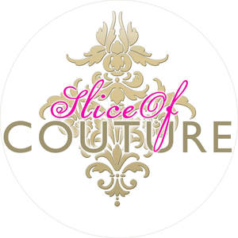

Trade Mark Journal No.2025/013 28 March 2025
UK00004136404 12 December 2024 (8,16,21,30,41,43)

- Class 8
- Cake cutters; Cake levelers; Pizza cutters; Spoons; Coffee spoons; Spoons for tea; Spoons being tableware; Table knives, forks and spoons of plastic; Silver plate [knives, forks and spoons]; Baby spoons, table forks and table knives; Plastic spoons, table forks and table knives.
- Class 16
- Gift boxes made of cardboard; Cardboard cake boxes; Printed correspondence course materials; Stencils; Paper cake toppers; Stencils [stationery]; Boxes of paper; Boxes of cardboard or paper; Gift boxes; Cardboard boxes; Paper cake decorations; Paper gift boxes; Cardboard gift boxes; Hat boxes of cardboard; Display boxes of cardboard; Stencils for decorating food and beverages; Lettering stencils; Packaging boxes of card; Packaging boxes of cardboard; Paper boxes; Boxes of cardboard; Paper cake decorations; Paper cake toppers; Cardboard cake boxes.
- Class 21
- Baking cups of paper; Cake plates; Baking sheets of common metal; Spatulas; Bowls for candy; Egg separators [kitchen utensils]; Hand-operated cookie presses; Cake decorating tips and tubes; Plastic bowls [basins]; Cookie jars; Basting spoons, for kitchen use; Cosmetic spatulas; Spoon supports; Boxes for biscuits; Pastry cutters; Serving bowls; Spoons (Basting -), for kitchen use; Salad tongs; Window boxes; Bento boxes; Pie tins; Cake moulds; Cookie [biscuit] cutters; Bowls; Baking dishes made of porcelain; Cupcake molds; Porcelain cake decorations; Cookie sheets; Tea infusers; Cake trays; Silicone muffin baking liners; Tea canisters; Spatulas for kitchen use; Mixing bowls; Cake bases; Silicone baking cups; Cake stands; Baking containers made of glass; Cake rings; Cookware, except forks, knives and spoons; Cooking pans; Baking mats; Sticks for lollipops; Cake domes; Pan scrapers; Sticks for cake pops; Spatulas [kitchen utensils]; Decorating bags for confectioners; Sugar tongs; Turners (kitchen utensil); Cupcake baking cups; Cake brushes; Baking dishes made of glass; Cupcake stands; Pancake frying pans; Glass bowls; Cake pans; Muffin tins; Tea strainers; Baking trays made of aluminium; Cookie cutters; Tea cups; Spoon rests; Biscuit cutters; Cake tins; Cookware and tableware, except forks, knives and spoons; Mixing spoons [kitchen utensils]; Sugar bowls; Mixing spoons; Muffin pans; Baking tins; Baking dishes made of earthenware; Bowls for sugar candy; Baking cases of silicone; Baking utensils; Cake servers; Roasting tins; Ice tongs; Tea pots; Baking cases of paper; Coffee cups; Paper baking cups; Baking dishes; Cake molds; Cake tins; Cake pans; Cake molds; Cake trays; Cake moulds; Cake stands; Cake plates; Cake servers; Cake rings; Cake brushes; Cake bases; Cake decorating tips and tubes; Cake domes; Cupcake baking cups; Sticks for cake pops; Cake rests; Cake molds [moulds]; Pie tins; Cookie cutters; Cookie jars; Cookie [biscuit] cutters; Cookie sheets; Biscuit cutters; Baking tins; Cupcake molds; Pastry cutters; Muffin tins; Silicone muffin baking liners; Paper baking cups; Baking cups of paper; Silicone baking cups; Crumb trays; Chocolate molds; Pastry molds; Baking utensils; Baking dishes; Basting spoons [cooking utensils]; Mixing spoons [kitchen utensils]; Baking dishes made of glass; Baking dishes made of earthenware; Baking trays made of aluminium; Cooking pans; Jam spoons; Flat cooking ladles; Bread tongs; Baking mats; Baking containers made of glass; Shallow pans for cooking; Utensil jars; Moulds [kitchen utensils]; Serving scoops [household or kitchen utensil]; Spatulas [kitchen utensils]; Sugar bowls; Pancake frying pans; Cooking utensils; Serving spoons; Baking cases of silicone; Simmer rings [cooking utensils]; Bowls for sugar candy; Cooking skewers, not of metal; Sugar tongs; Kitchen moulds; Cooking skewers; Molds [kitchen utensils]; Aluminium moulds [kitchen utensils]; Baking cases of paper; Mixing bowls; Cooking pans [non-electric]; Butter dishes; Spatulas for kitchen use; Baking sheets of common metal; Roasting tins; Cooking pots; Cooking pots for use in microwave ovens.
- Class 30
- Cake Pops; Candies (Non-medicated -) with mint; Cookies; Pastilles [confectionery]; Coffee flavorings; Chocolate coffee; Tieguanyin tea; Instant coffee; Candies [sweets]; Coffee drinks; Sugared almonds; Flavoured coffee; Chocolate confections; Waffles with a chocolate coating; Mints [candies, non-medicated]; Ice-cream cakes; Chocolate caramel wafers; Chocolate marzipan; Vegan cakes; Salty biscuits; Caramels [candies]; Peppermint tea; Chocolate cakes; Unroasted coffee beans; Edible ice powder for use in icing machines; Coffee; Barley tea; Meringues; Chocolate covered biscuits; Icing; Candy cake; Candy cake decorations; Frozen brownie dough; Flavorings for cakes; Chocolate candy with fillings; Marzipan; Caramel coated popcorn with candied nuts; Prepared baking mixes; Chocolate coated biscuits; Tea (Iced -); Tea leaves; Dragees [non-medicated confectionery]; Cake frosting; Coffee flavourings; Shortbread with a chocolate flavoured coating; Chocolate mousses; Citron tea; Tea; Chocolate candies; Ginger tea; Cream cakes; Pastries; cakes, tarts and biscuits (cookies); Cake mixes; Coconut macaroons; Powder (Cake -); Rosemary tea; Chocolate topping; Jasmine tea; Mallows [confectionery]; Coffee pods; Brownie mixes; Cake decorations made of candy; Green tea; Chamomile tea; Decaffeinated coffee; Cupcakes; Coffee substitutes [artificial coffee or vegetable preparations for use as coffee]; Chocolate cake; Cake bars; Shortbread part coated with chocolate; Chocolate fudge; Shortbread biscuits; Instant Oolong tea; Biscuits having a chocolate coating; Cake preparations; Icings; Petit-beurre biscuits; Flavourings of tea; Sugarless candies; Chocolate covered pretzels; Cake powder; Danish butter cookies; Tea pods; Ginseng tea; Iced tea; Iced sponge cakes; Cake flour; Pre-mixes ready for baking; Tea for infusions; Shortbread; Coffee beans; Fondants; Marshmallow topping; Chocolate for toppings; Pastry dough; Icing mixes; Chocolate decorations for cakes; Lollipops [confectionery]; Icing sugar; Cake dough; Chocolate topped pretzels; Crystallized sugar for decorating cakes; Coffee bags; Chocolate coated marshmallow biscuits containing toffee; Cookie mixes; Cake doughs; Chocolate biscuits; Frozen cookie dough; Almond cake; Eclairs; Chai tea; Deep chocolate cake made with chocolate sponge; Freeze-dried coffee; Coffee (Unroasted -); Biscuits; Tea extracts; Candy coated confections; Frostings; Chocolate covered cakes; Chocolate for confectionery and bread; Cakes; Iced cakes; Unroasted coffee; Iced coffee; Fruit cake snacks; Coffee capsules; Oolong tea [Chinese tea]; Coffee essences for use as substitutes for coffee; Candy mints; Dough for cakes; Meringue; Confectionery chips for baking; Sugar candies (Non-medicated -); Shortbread with a chocolate coating; Black tea; Sponge cakes; Cookie dough; Biscuits for cheese; Cake batter; Frosting [icing]; (Cake -) Icing for cakes; Mousses (Chocolate -); Tea beverages; Truffles [confectionery]; Frosting mixes; Ready-made baking mixtures; Coffee beverages with milk; Chocolate wafers; Biscuits flavoured with fruit; Herbal tea; Nonpareils; Sponge cake; Tea cakes; Butter biscuits; Starch-based candies; Cake icing; Macarons; Edible wafers; Coffee beverages; Tea bags; Tea bags for making non-medicated tea; Biscuit mixes; Brownie dough; Gelatin-based chewy candies; Black tea [English tea]; Fondants [confectionery]; Biscuits having a chocolate flavoured coating; Roasted coffee beans; Tea beverages with milk; Oolong tea; Cake mixtures; Almond cookies; Cake frosting [icing]; Chocolate coating; Sugar-free mint candies; Chocolate brownies; Macaroons [pastry]; Candy decorations for cakes; Chocolate-coated sugar confectionery; Fruit cakes; Gummy candies; Darjeeling tea; Mousse confections; Cakes; Icing for cakes; Ice-cream cakes; Chocolate cakes; Candy cake; Chocolate cake; Powder for making cakes; Cream cakes; Cake frosting; Chocolate decorations for cakes; Fruit cakes; Cake decorations made of candy; Candy cake decorations; Crystallized sugar for decorating cakes; Cake mixes; Candy decorations for cakes; Cake dough; Tea cakes; Chocolate covered cakes; Cake bars; Sponge cakes; Iced sponge cakes; Breakfast cake; Cake preparations; Cake Pops; Sponge cake; Almond cake; Cupcakes; Pastries, cakes, tarts and biscuits (cookies); Mixes for making bakery products; Cake powder; Powder (Cake -); Cake mixtures; Deep chocolate cake made with chocolate sponge; Ice cream cakes; Foodstuffs made of sugar for making a dessert; Flapjacks [griddle cakes]; Chocolate fillings for bakery products; Chocolate decorations for confectionery items; Foodstuffs made of a sweetener for making a dessert; Chocolate for confectionery and bread; Biscuits having a chocolate coating; Custards [baked desserts]; Chocolate desserts; Biscuits having a chocolate flavoured coating; Confectionery chips for baking; Cookie dough; Cookies; Cookie mixes; Frozen cookie dough; Almond cookies; Danish butter cookies; Filled cookies; Brownie dough; Biscotti dough; Shortbread; Shortbread with a chocolate coating; Shortbread biscuits; Frozen biscotti dough; Frozen brownie dough; Biscotti; Chocolate brownies; Chocolate biscuits; Shortbread with a chocolate flavoured coating; Shortbread part coated with chocolate; Chocolate fudge; Macaroons [pastry]; Cake frosting [icing]; Chocolate covered wafer biscuits; Biscuit mixes; Chocolate coated biscuits; Brownies; Shortbreads; Butter biscuits; Chocolate marzipan; Chocolate candy with fillings; Chocolate topped pretzels; Milk chocolate teacakes; Chocolate caramel wafers; Shortbread part coated with a chocolate flavoured coating; Gingerbread; Chocolate candies; Salted butter fudge; Chocolate covered biscuits; Chocolate wafers; Fudge; Candy with caramel; Brownie mixes; Peppermint candy; Wafers [biscuits]; Chocolate sweets; Chocolate; Candy with cocoa; Gelatin-based chewy candies; Biscuits; Chocolate waffles; Baking spices; Pre-mixes ready for baking; Prepared baking mixes.
- Class 41
- Provision of training courses for young people in preparation for careers; Provision of correspondence courses; Arranging of training courses; Production of course material distributed at management courses; Provision of education courses; Conducting of courses; Correspondence courses, distance learning; Written training courses; Preparation of educational courses and examinations; Correspondence courses (Provision of -); Residential training courses; Providing courses of training; Production of course material distributed at vocational courses; Organisation of training courses; Courses (Training -) relating to science; Personal development courses; Provision of training courses in personal development; Training courses (Provision of -); Distance learning courses; Arrangement of training courses in teaching institutes; Provision of skill assessment courses; Training courses; Courses of instruction (Provision of -); Provision of courses of instruction; Courses (Training -) relating to law; Provision of training courses.
- Class 43
- Cake decorating; Coffee shops; Tea rooms; Decorating of food; Cake decorating.
Asma Yaqub